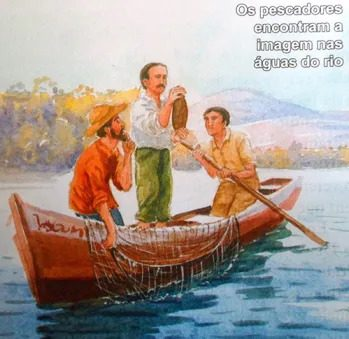
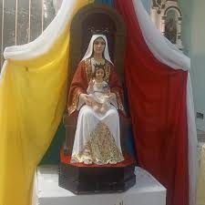
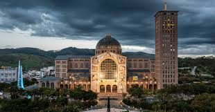

El Hallazgo Milagroso

En octubre de 1717, el conde gobernador de São Paulo, dom Pedro Miguel de Almeida Portugal, realizaba un viaje oficial por la región del Valle do Paraíba y estaba previsto que pasara por la villa de Guaratinguetá, donde los vecinos organizaron en su honor una fiesta con abundante comida y entretenimiento. Ante la escasez de peces en las mesas de los preparativos, tres pescadores locales —João Alves, Filipe Pedroso y Domingos Garcia— se adentraron en las aguas del Río Paraíba do Sul para remediar la situación. Las redes regresaron vacías una y otra vez, con la humillación añadida de tener que abastecer la mesa del gobernador. Fue en uno de aquellos lances fallidos cuando João Alves sacó del fondo del río, enredado entre las mallas, un fragmento de una figura de barro: el cuerpo decapitado de una imagen de la Inmaculada Concepción. En el siguiente lance, la misma red trajo la cabeza de la figura. Reunidas las dos piezas, los pescadores reconocieron la imagen de Nuestra Señora de la Concepción, oscurecida por los sedimentos y el tiempo que había permanecido sumergida.
Lo que ocurrió a continuación transformó un hallazgo fortuito en un prodigio imposible de ignorar: desde ese momento, las redes comenzaron a llenarse de peces con una abundancia extraordinaria, inusitada para aquellas aguas en aquella época del año. Los tres pescadores interpretaron el hecho como un signo inequívoco de la presencia y el favor de la Virgen. La imagen fue envuelta con reverencia, los hombres regresaron al pueblo con la pesca más asombrosa de sus vidas, y la noticia del hallazgo comenzó a circular con la velocidad que solo tienen las cosas que el pueblo reconoce como sagradas.
La identificación de la imagen fue sencilla para cualquier devoto de la época: representaba a la Inmaculada Concepción, advocación muy extendida en el Brasil colonial gracias a la influencia franciscana y a la devoción portuguesa. La imagen, de terracota sin policromar, medía aproximadamente 36 centímetros de altura y estaba dividida en dos piezas —cabeza y cuerpo— que encajaban perfectamente, como si la separación y el posterior reencuentro en las aguas del río formaran parte de un designio. El hecho de que la imagen hubiera sobrevivido sumergida durante un tiempo indeterminado sin desintegrarse fue considerado, en sí mismo, como una señal de protección sobrenatural.
La Devoción Espontánea del Pueblo
Lo que distingue el origen de la devoción a la Virgen de Aparecida de muchos otros cultos marianos es su carácter radicalmente popular y su crecimiento desde abajo, sin una iniciativa eclesiástica que lo promoviese o dirigiese. La imagen fue llevada a la casa de Filipe Pedroso, uno de los pescadores, y allí permaneció durante años como objeto de culto doméstico y vecinal. La familia Pedroso construyó en su propiedad un pequeño oratorio para que los vecinos de los alrededores pudieran acercarse a venerar a la Señora, y poco a poco comenzaron a llegar devotos de lugares más y más distantes, atraídos por las noticias de gracias recibidas y de favores concedidos mediante la intercesión de aquella pequeña imagen oscura del río.
Durante décadas, la devoción creció de manera orgánica, impulsada exclusivamente por el fervor del pueblo sencillo: campesinos, esclavos, artesanos, comerciantes humildes que encontraban en aquella imagen de barro negro el rostro de una madre que compartía su condición y comprendía su dolor. Es significativo que entre los primeros y más fervientes devotos de la Virgen de Aparecida se contaran numerosos esclavos africanos, quienes veían en la imagen de tez oscura un signo de cercanía y de identificación con su propia condición. Este vínculo entre la Virgen de Aparecida y la población afrobrasileña pertenece a las raíces más profundas y menos conocidas de la devoción, y constituye uno de los argumentos más convincentes de su autenticidad popular.
Solo en 1745 se construyó la primera capilla propiamente dicha en el lugar donde la familia Pedroso había instalado su oratorio, y no fue hasta la segunda mitad del siglo XIX cuando la jerarquía eclesiástica intervino de manera decisiva para organizar institucionalmente la devoción y promover la construcción de un templo digno. Esta secuencia —primero el pueblo, luego la Iglesia— es perfectamente coherente con la historia de los grandes santuarios marianos y subraya el carácter de «revelación desde abajo» que caracteriza la devoción a Aparecida.
La Imagen

La imagen de Nuestra Señora de la Aparecida es una de las más veneradas y simbólicamente ricas del catolicismo latinoamericano. Sus 36 centímetros de terracota sin policromar —o más bien, sin policromía visible a simple vista, pues los investigadores han detectado bajo la superficie trazas de una pintura original que la oscuridad del tiempo y del humo de las velas han cubierto— la presentan como una Inmaculada Concepción de rasgos austeros y dignos, de pie sobre la luna creciente, con las manos juntas y una expresión de recogida serenidad.
El color oscuro de la imagen, que ha dado lugar a su designación popular como la «Madona Negra de Brasil» o Nossa Senhora Aparecida, no fue una elección iconográfica deliberada sino el resultado de décadas de exposición al humo de las velas encendidas por los devotos y, probablemente, al tiempo transcurrido bajo las aguas del río. Sin embargo, esta oscuridad accidental ha adquirido con el tiempo una densidad teológica y simbólica enorme: para millones de brasileños, especialmente para los afrodescendientes y para los pobres, el color de la Virgen de Aparecida habla de una Madre que no es ajena a su mundo sino que lleva en su piel la misma marca de la historia compartida.
Como en los grandes santuarios marianos, la imagen original está normalmente vestida con mantos bordados que se renuevan en las grandes festividades. Los cambios de vestimenta de la Virgen son actos litúrgicos que congregan a multitudes, y el ajuar de la imagen —conservado en parte en el museo del santuario— es un testimonio textil de la piedad popular a lo largo de tres siglos, con piezas donadas por fieles de toda condición social y de todos los rincones de Brasil.
La Basílica

La basílica que hoy corona el cerro de Aparecida es uno de los edificios religiosos más impresionantes del mundo. Inaugurada en 1980 por el papa Juan Pablo II durante su primera visita pastoral a Brasil, la Basílica Nacional de Nossa Senhora Aparecida es la iglesia de mayor capacidad de América Latina y la segunda del mundo por superficie —solo superada por la Basílica de San Pedro en Roma—, con una capacidad para 45.000 personas en su interior y varios cientos de miles más en la explanada exterior. Sus dimensiones son extraordinarias: 173 metros de largo, 168 metros de ancho en los transeptos y una cúpula central de 70 metros de altura. La nave central, de proporciones catedralicias, puede alojar simultáneamente varias celebraciones litúrgicas y actos de devoción sin que interfieran entre sí.
La construcción de la basílica fue un proceso largo que se extendió durante más de cuatro décadas, desde los primeros proyectos en la década de 1930 hasta la inauguración formal en 1980. El proyecto definitivo, del arquitecto Benedito Calixto de Jesus, optó por un lenguaje moderno que combina la monumentalidad de la arquitectura religiosa con una gran luminosidad interior, lograda mediante la abundancia de vitrales y la generosa apertura de vanos en las fachadas. El efecto al entrar en el templo es de una luz cambiante que a diferentes horas del día baña el interior con coloraciones distintas, creando una atmósfera de contemplación y recogimiento que contrasta con las dimensiones gigantescas del espacio.
El museo del santuario, instalado en las dependencias adyacentes a la basílica, alberga una de las colecciones de ex-votos más importantes de América Latina: miles de objetos depositados por peregrinos en acción de gracias, que van desde cuadros pintados narrando curaciones milagrosas hasta prótesis ortopédicas, fotografías, instrumentos de trabajo y cartas manuscritas dirigidas a la Virgen. Este museo es, en cierto modo, la memoria viva de la devoción popular, un archivo humano de sufrimientos aliviados y esperanzas cumplidas.
El Papa Francisco y Aparecida
La vinculación del Papa Francisco con Nuestra Señora de la Aparecida es una de las dimensiones menos conocidas pero más significativas de su pontificado. En mayo de 2007, la V Conferencia General del Episcopado Latinoamericano y del Caribe se reunió precisamente en Aparecida, bajo el signo de la Virgen patrona de Brasil, para redefinir la misión evangelizadora de la Iglesia en el continente americano. El cardenal Jorge Mario Bergoglio, arzobispo de Buenos Aires, tuvo un papel decisivo en la redacción del llamado «Documento de Aparecida», el texto programático que surgió de aquella conferencia y que marcó un giro significativo en la teología pastoral latinoamericana.
El Documento de Aparecida, cuya comisión de redacción presidió Bergoglio, introdujo conceptos que serían centrales en su posterior pontificado: el «discipulado misionero», la «Iglesia en salida», la opción preferencial por los pobres no como opción ideológica sino como exigencia del Evangelio, y la valoración de la religiosidad popular como lugar teológico y expresión genuina de la fe del pueblo. La Virgen de Aparecida, hallada por pescadores pobres y venerada durante décadas por esclavos y campesinos antes de que la jerarquía institucional la reconociera, encarna perfectamente estos principios teológicos que el texto formuló con rigor y que Francisco llevaría consigo al cónclave de 2013.
Cuando Jorge Mario Bergoglio fue elegido Papa el 13 de marzo de 2013, uno de sus primeros gestos fue visitar la imagen de la Virgen de Aparecida venerada en la Basílica de Santa María la Mayor de Roma, donde una réplica de la imagen brasileña ocupa un lugar de honor. Durante la Jornada Mundial de la Juventud celebrada en Río de Janeiro en julio de 2013, Francisco visitó el santuario de Aparecida y celebró allí una misa multitudinaria, renovando su consagración personal a la Virgen de Brasil y subrayando el vínculo espiritual entre su pontificado y el espíritu pastoral de Aparecida. Esta continuidad entre el Documento de 2007 y el Magisterio del Papa Francisco constituye uno de los hilos conductores más claros del catolicismo latinoamericano contemporáneo, y la Virgen de la Aparecida —encontrada en el barro del río por tres hombres pobres, honrada por los últimos antes que por los primeros— permanece como símbolo vivo de esa Iglesia que sale al encuentro de los descartados del mundo.